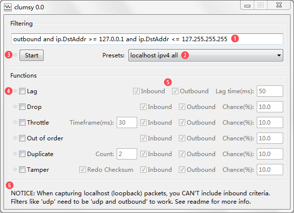

为了后文阅读方便，这里列出本页面中反复使用的一些术语。
！这部分内容非常重要，请务必不要略过。
目前的实现中有一些难以绕过的限制和问题，列表如下：
首先请根据你系统的版本(32位或64位)下载 clumsy 最新版本。注意如果你安装的是64位的系统那么一定要下载64位的 clumsy。另一件重要的事实 clumsy 需要管理员权限才能正常工作。双击打开 clumsy 的话会弹出 UAC 对话框。如果没有的话请右键点击 clumsy.exe 选择"以管理员身份运行"。如果一切正常，你应该能看到如下图的界面：
根据上图中的数字图标顺序：
clumsy 提供的功能应该很容易理解，你可以在首页的介绍中获得简单的描述，或者你也可以直接试试看。如果你一下子没想起来有什么地方可以用的上，你可以把 filter 设置为 "inbound and outbound" 然后打开你最喜欢的浏览器访问任意网站，看看 clumsy 效果如何。.
这里 filter 中提供的语句会被直接作为参数提供给 WinDivert。语法在 WinDivert 的文档中有详细的描述。如果你写过一点程序你会发现这个语法跟你放在 if 里面的判断表达式非常类似。你可以用 and, or, not 和 括号 来表达简单的逻辑规则。类似 =, !=, ‹, › 的操作符也可以被使用。下面是 filter 中可以使用的变量的列表(直接拷贝自 WinDivert 的文档)。你也可以通过以预设的 filter 作为例子参考。
| outbound | 是否为输出数据包 |
| inbound | 是否为输入数据包 |
| ifIdx | 网络设备 index |
| subIfIdx | 副网络设备 index |
| ip | 是否为 IPv4 |
| ipv6 | 是否为 IPv6 |
| icmp | 是否为 ICMP |
| icmpv6 | 是否为 ICMPv6 |
| tcp | 是否为 TCP |
| udp | 是否为 UDP |
| ip.* | IPv4 的参数 (见 DIVERT_IPHDR) |
| ipv6.* | IPv6 的参数 (见 DIVERT_IPV6HDR) |
| icmp.* | ICMP 的参数 (见 DIVERT_ICMPHDR) |
| icmpv6.* | ICMPV6 的参数 (见 DIVERT_ICMPV6HDR) |
| tcp.* | TCP 的参数 (见 DIVERT_TCPHDR) |
| tcp.PayloadLength | TCP 数据段长度 |
| udp.* | UDP 的参数 (见 DIVERT_UDPHDR) |
| udp.PayloadLength | UDP 数据段长度 |
无法开始，错误代码 "3"
在命令行中输入一下两行并执行：
sc stop WinDivert1.0
sc delete WinDivert1.0
在下一版本中这个问题应该会被修正。
clumsy 开始运行后使得网络变慢。
当你输入了 filter 点击 '开始' 后，clumsy 就已经开始截获包裹。这个一定会有一定的效率损失。但好消息是 clumsy 本身就是为了模拟网络状况糟糕的软件所以这个问题不是很严重。
另一方面，你应该精确的设置 filter 的内容，让它尽可能准确的捕捉你感兴趣的数据包。
延迟比在 Lag 里设置的要严重很多。
这个问题的重点在于，clumsy 里面的设置并不是准确的可以用来做测速的值。其作用更倾向于作为参数控制软件的行为。
另一个需要理解的是，这里的延迟是作用于每一个网络包裹的。比如建立一个 TCP 连接需要至少 3 个包裹。那么如果 clumsy 引入了 20ms 的延迟，对于每一个 TCP 连接则至少引入了 3*20=60ms 的延迟。如果是要载入一个网页的话，有部分 HTTP 请求必须是要按顺序完成后页面才能开始渲染。假如要完成 1, 2, 3 这三个请求，那么 clumsy 在这里至少引入了 3*60=180ms 的延迟。
所以说如果 clumsy 让网络变的很慢的话也不用太担心。
在 Windows Server 2008 上报错。
安装这个系统补丁可以解决这个问题。 参见这个 issue。